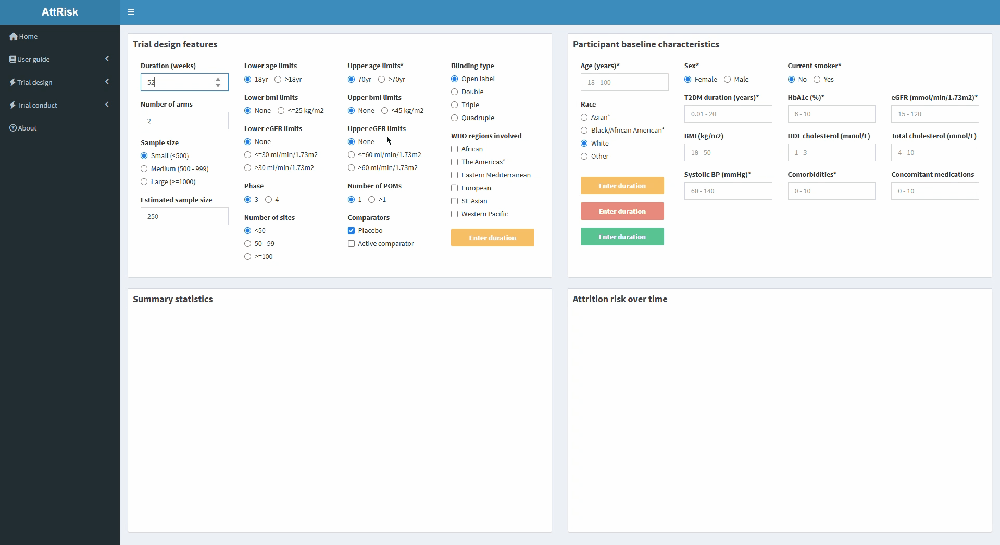

Box A displays the inputs for trial design features. Most features have a default value set upon opening the interface, but these can be changed by selecting the other available options for a features.
The available set of trial design inputs are:
| Features | Description | Categories and limits |
|---|---|---|
| Duration | Duration of trial follow-up in weeks | 12 to 520 weeks |
| Number of arms | Number of treatment arms | 2 to 6 arms |
| Sample size | Approximate sample size | Small (<500), Medium (500 - 999), Large (>=1000) |
| Estimated sample size | Fine-tuning of sample size | Optional input, default is midpoint of category (e.g. 250 if small) |
| Age limits | Upper and lower age limits | Upper: 70yr, >70yrs; Lower: 18yrs, >18yrs |
| BMI limits | Upper and lower BMI limits | Upper: None, <45kg/m2; Lower: None, <=25kg/m2 |
| eGFR limits | Upper and lower estimated glomerular filtration rate (eGFR) limits | Upper: None, <=60 or >60ml/min/1.73m2; Lower: None, <=30 or >30ml/min/1.73m2 |
| Phase | Trial phase | Phase 3 or 4 |
| Number of primary outcomes (POMs) | Number of primary outcomes | 1 or >1 |
| Comparators | Comparator treatment groups | Placebo, Active comparator or both |
| Blinding type | Level of blinding | Open label, Double, Triple or Quadruple |
| WHO regions involved | World Health Organisation (WHO) regions involved | Can select more than one of the following: African, the Americas, Eastern Mediterranean, Europe, South-east Asia, Western Pacific |
Box B displays the inputs for baseline participant characteristics:
| Features | Description | Categories and limits |
|---|---|---|
| Duration | Duration of trial follow-up in weeks | 12 to 520 weeks |
| Number of arms | Number of treatment arms | 2 to 6 arms |
| Sample size | Approximate sample size | Small (<500), Medium (500 - 999), Large (>=1000) |
| Estimated sample size | Fine-tuning of sample size | Optional input, default is midpoint of category (e.g. 250 if small) |
| Age limits | Upper and lower age limits | Upper: 70yr, >70yrs; Lower: 18yrs, >18yrs |
| BMI limits | Upper and lower BMI limits | Upper: None, <45kg/m2; Lower: None, <=25kg/m2 |
| eGFR limits | Upper and lower estimated glomerular filtration rate (eGFR) limits | Upper: None, <=60 or >60ml/min/1.73m2; Lower: None, <=30 or >30ml/min/1.73m2 |
| Phase | Trial phase | Phase 3 or 4 |
| Number of primary outcomes (POMs) | Number of primary outcomes | 1 or >1 |
| Comparators | Comparator treatment groups | Placebo, Active comparator or both |
| Blinding type | Level of blinding | Open label, Double, Triple or Quadruple |
| WHO regions involved | World Health Organisation (WHO) regions involved | Can select more than one of the following: African, the Americas, Eastern Mediterranean, Europe, South-east Asia, Western Pacific |
Box C displays summary statistics for attrition risk over time.
The following columns are generated in this summary table:
| Columns | Description |
|---|---|
| Follow-up time (weeks) | Each week of follow-up |
| Participants at risk | Number of participants at risk of attrition at a given week |
| Non-completers | Number of non-completers at a given week |
| Attrition risk (%) | The probability of attrition having occurred at a given week |
Box D illustrates the risk of attrition over time for a participant with a particular set of characteristics in a trial with a given set of design features. The timeframe reflects the duration inputted in Box A. The y-axis illustrates risk of attrition (%), and the x-axis illustrates follow-up time in weeks.